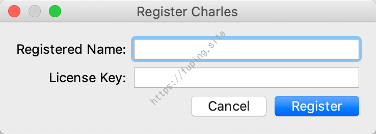
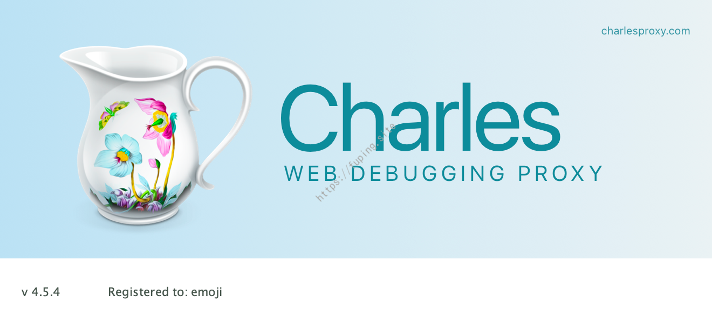

Charles的一次破解之旅
0x01 前言
本文以WEB抓包工具Charles(v4.2.8)为例，讲解一下其注册的流程以及如何使用javassist对java软件进行修改，达到破解的目的。
先看一下实现的效果。使用任意用户名+任意key就可以进行激活。
激活成功
如果想换用户名，取消注册再次注册即可。
Help->Unregister Charles…
接下来我们来分析一下注册的流程，以及如何去破解。
0x02 分析
首先打开软件(版本为v4.2.8)，未注册时需要等待10s的动画才可进入，而且30分钟后会退出软件。
打开Help->Register Charles…，看到注册界面。

使用jadx-gui打开charles.jar，搜索字符串Register Charles，定位到com.xk72.charles.gui.frames.RegisterFrame中。
其中一段代码：
1 | this.bRegister.addActionListener(new NBdE(this)); |
可以看到注册按钮绑定的事件，当按下注册按钮时，执行new NBdE(this)。
跟进到com.xk72.charles.gui.frames.NBdE
其中的trim为Registered Name，trim2为License Key
首先对输入的name和key进行判断，需要其长度要大于0，然后调用qHTb.DdNM(trim, trim2)方法，并对其返回的结果进行判断。当不为null时，注册失败。反之则注册成功。
跟进com.xk72.charles.qHTb中，调用的是DdNM(String str1,String str2)
由之前的推断可以知道，当
qHTb.DdNM(str1, str2)=null时注册成功，这里DdNM(String str1,String str2)函数中如果正常执行twLa = new qHTb(str, str2);则会返回null，否则返回异常的信息。所以需要看twLa = new qHTb(str, str2);是否抛出异常，如果未异常，则返回为null，即注册成功；反之，注册失败。
继续跟进构造函数qHTb(String str1,String str2)。

构造函数qHTb(String str1,String str2)调用了qHTb(String str1,String str2,int i)
其主要代码如下：
1 |
|
因此要使注册成功，首先需要twLa(String str,String str2, int i)在调用的时候无异常，并且需要DdNM(long j)返回为true。
由以上代码可知，当j=lGuB时，返回为true。lGuB为已知常量。即需要满足j=5911726755176091652L;时，DdNM(long j)返回为true。
接下来看twLa(String str,String str2, int i)。
由于jadx-gui查看twLa未反编译完全，为了查看方便，这里用Idea打开。
twLa方法的三个参数，var1是注册的name，var2是注册的key，var3是4.

分割线以上的为注册码的校验，下面为对用户名进行操作。可以从以上的代码看出，在用户名操作时没有抛出异常的行为，所以从这里来看，注册成功与否与用户名没有直接关系（因为从之前的推断可知，当出现异常时注册失败）。
所以这里的破解思路是：
使用javassist修改twLa(String str,String str2, int i)中的第二个参数，为一个可用的注册码，然后使该函数的返回值为5911726755176091652L即可。
当然也可以直接修改DdNM(long j)返回为true，修改DdNM(String str1, String str2)第二个参数为可用的key。这样修改以后，在软件运行注册的时候，可以达到任意用户名和任意key注册的效果。
当然修改的方法不止这两种，知道注册流程后，修改就很容易了。
接下来引入如何使用javassist来对软件进行修改。
0x03 使用javassist进行修改
Javassist是一个开源的分析、编辑和创建Java字节码的类库。虽然关于java字节码的处理有很多工具，如bcel，asm。不过这些都需要直接跟虚拟机指令打交道。而且Javassit 提供了更高级的API，无需掌握字节码指令的知识，对使用者要求较低。直接使用java编码的形式，不需要了解虚拟机指令，就能动态改变类的结构，或者动态生成类。
v4.2.8的修改
根据上面的分析，修改v4.2.8时，需要修改DdNM(long j)返回为true，修改DdNM(String str1, String str2)第二个参数为可用的key，例如C9D1226DB5B93C12D1。
利用Javassist进行修改起来也很简单，具体实现代码如下：
1 | private static ClassPool pool = ClassPool.getDefault(); |
然后更新修改的内容，并替换
1 | jar -uvf charles.jar com |
然后再次打开Charles注册时就可以达到文章开头的效果了。
更改后的文件：https://fuping.site/files/qHTb.class
使用方法：新建文件夹com/xk72/charles，然后将class文件放入其中，执行
jar -uvf charles.jar com。再替换charles.jar即可。
v4.5.4的修改
当时修改的时候最新版是v4.2.8，10.29号下载的是v4.5.1，还没来得及安装，再次查看最新版已经是v4.5.4了。
虽然更新了，其中类名和方法名改变了，但是注册的流程还是老样子。根据上面的思路可以进行修改。找到注册校验的类。
需要修改的类为com.xk72.charles.DIWy。
需要修改的方法：
1.private boolean OZtq(long var1)，返回值修改为true。
2.public static String OZtq(String var0, String var1)，第二个参数为可用的key。
修改的代码就不贴了，和上面的一样，修改一下类名和方法名即可。
打开Charles后任意用户名+任意注册码注册成功。

更改后的文件：https://fuping.site/files/DIWy.class
0x04 总结
关于Charles破解的文章，网上有很多。大多数都是直接修改了注册的标志和注册的信息，本文也是提供了另外一种破解的思路。通过简单分析注册的流程，然后使用javassist进行java文件的修改，以此达到破解的目的。
关于更多Charles破解相关的文章，可以参考以下几篇：
[1].http://scz.617.cn:8/misc/201910241714.txt （有详细注册码的算法以及注册机）
[2].http://www.520monkey.com/archives/1295 （有分析和修改）
[3].https://www.freebuf.com/sectool/205520.html （有详细的javassist使用）
…